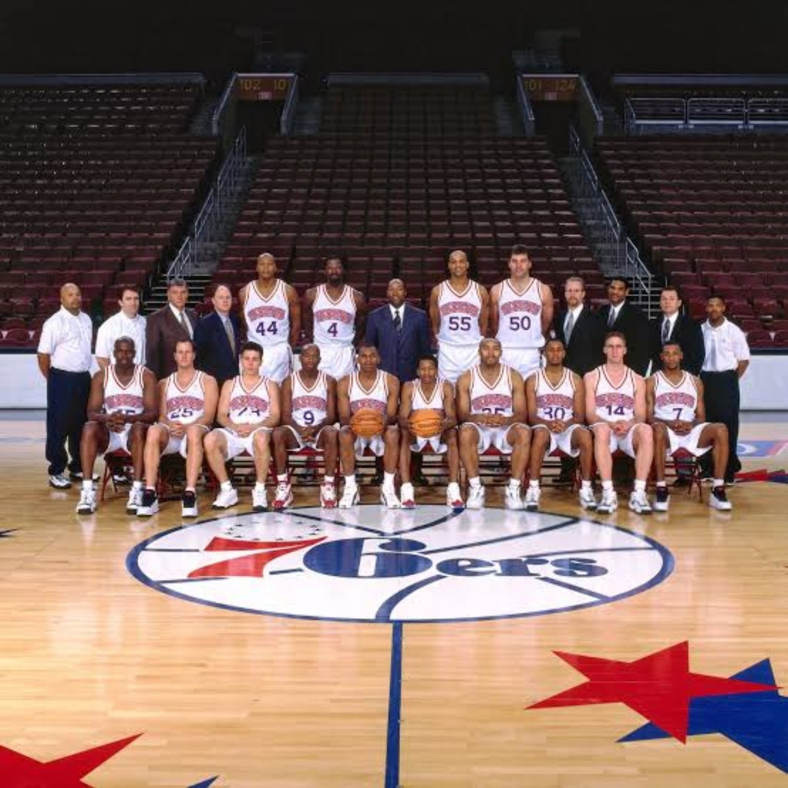
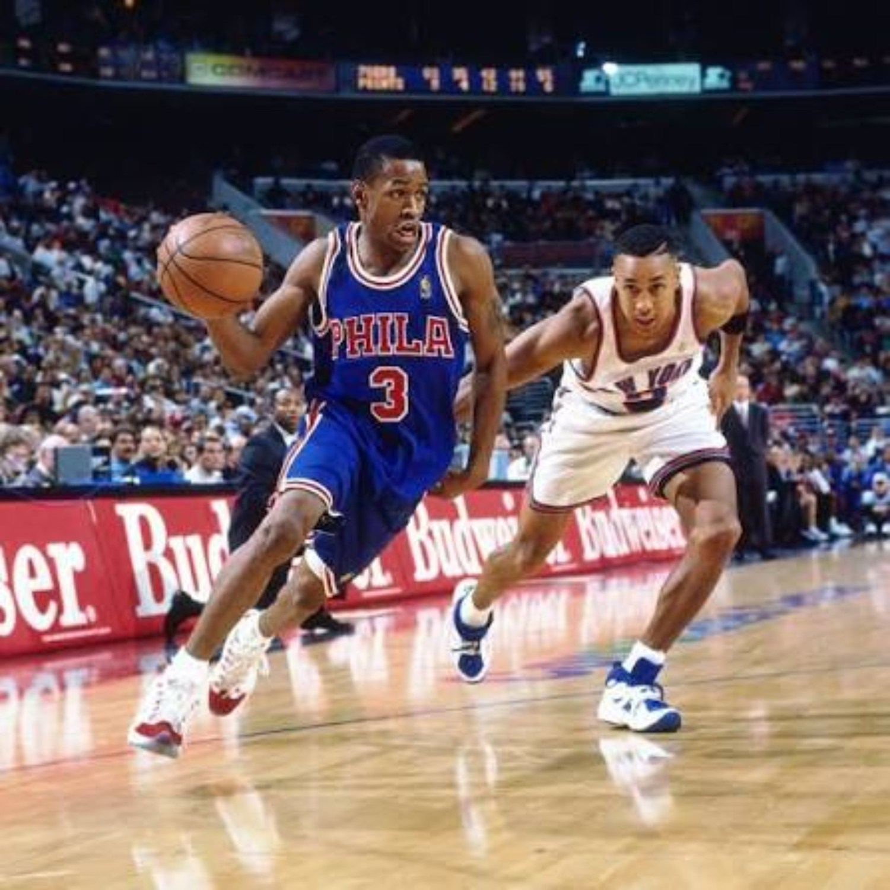
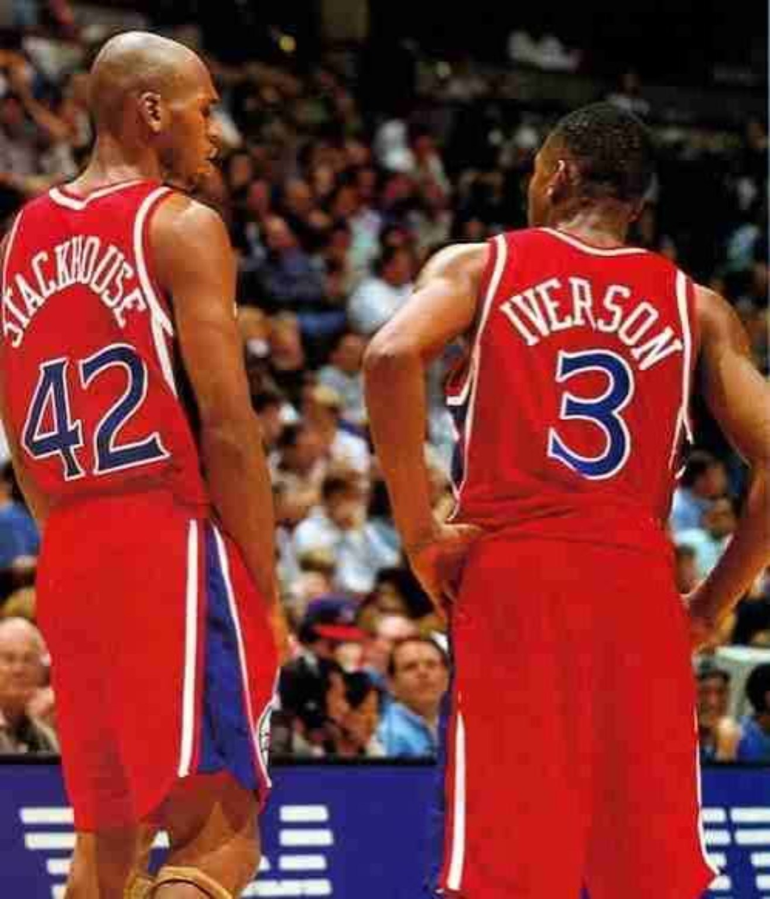
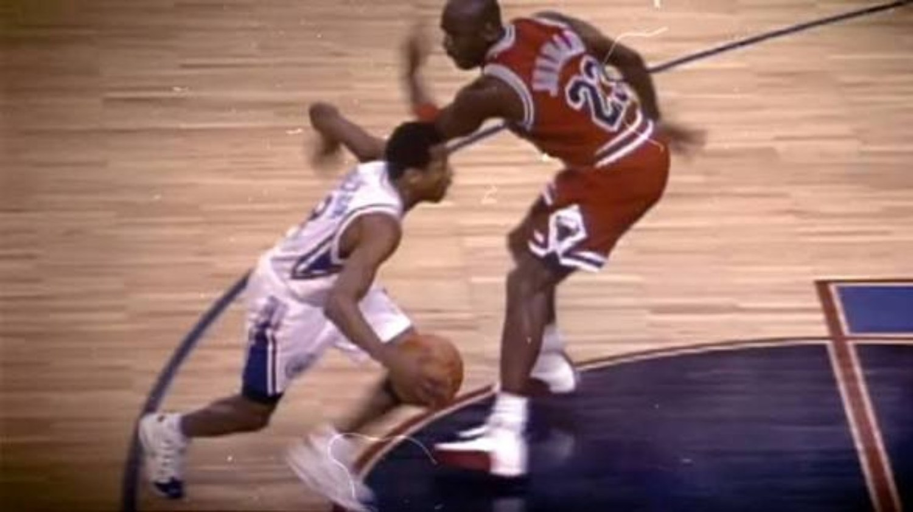
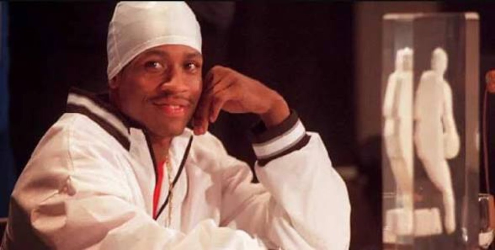

Allen Iverson's rookie year was not about dragging Philadelphia into contention. That was never the assignment. The Sixers had won 18 games the year before they drafted him and were still rebuilding. The assignment was simpler: hand the No. 1 pick the ball, let him go, let him make mistakes and find out whether the franchise had somebody worth building around.
01. THIS WASN'T A ONE-MAN DRAFT.
The 1996 class had real buzz everywhere. Stephon Marbury came in as another electric young point guard and became Iverson's cleanest early comparison. Ray Allen had the jumper and the polish. Marcus Camby had major attention as the No. 2 pick. Shareef Abdur-Rahim and Antoine Walker looked ready to score right away. Kerry Kittles was productive from the jump. Kobe Bryant and Steve Nash were not immediate rookie stars, but the depth of the class would become ridiculous with time.
That context matters because Iverson did not win Rookie of the Year against an empty field. Marbury averaged 15.8 points and 7.8 assists while Minnesota reached the playoffs. Abdur-Rahim put up 18.7 and 6.9. Walker averaged 17.5 and 9.0. Camby made All-Rookie First Team and blocked 2.1 shots per game. The class had options.
Marbury was probably the closest contemporary after Year 1. Same position. Similar age. Real production. Minnesota even made the postseason. But Philadelphia still had no reason to second-guess No. 1. The 1996 draft was deep enough to produce a generation of stars. The Sixers still got the player who felt like the top pick almost immediately.
02. PHILLY WAS SUPPOSED TO BE BAD.
The Sixers finished 18–64 in 1995–96. That is why the franchise was in position to draft first in the first place. One rookie was not supposed to turn that roster into a playoff team overnight. The 22–60 record in Iverson's first season was not evidence that the experiment failed. The season was the experiment.

There were established names around him. Jerry Stackhouse was already a young 20-point scorer. Derrick Coleman averaged 18.1 points and 10.1 rebounds. Clarence Weatherspoon was a veteran forward. But the franchise had no established system that could hide a rookie's weaknesses or simplify his job. Iverson had to learn NBA point guard responsibilities while carrying a scorer's workload at the same time.
The mistakes were normal young-player stuff: shot selection, turnovers, forcing possessions, figuring out where the NBA help defense came from. On a rebuilding team with the No. 1 pick, that was the price of development. The point was not to fix Iverson in November. The point was to see what Philadelphia had by April.
03. A 2-GUARD IN A 1'S BODY — BUT PHILLY NEEDED HIM TO BE BOTH.
Seven and a half assists from a rookie point guard is real playmaking. Iverson functioned as the point in 1996–97 because the roster needed him to. He brought the ball up, started the offense, broke the first defender down, created shots for teammates and still had to be the guy hunting points when the possession stalled.

That is the biggest difference between rookie Iverson and the version that later played beside Eric Snow. Snow could organize, defend bigger guards and let Iverson start possessions off the ball. Rookie AI had no such luxury. He could not spend whole stretches flying around screens and catching on the move. He had to create the spot himself.
That is why the 23.5 points matter beyond the raw total. This was not a rookie standing in the corner while veterans ran the team. Even with Stackhouse, Coleman and other established players, Iverson was being asked to function as the engine.
04. BEFORE IT WAS IVERSON'S TEAM, IT WAS IVERSON AND STACK.
Jerry Stackhouse cannot be reduced to a footnote in the rookie story. He was 22 years old, started 81 games and averaged 20.7 points. Philadelphia entered the season with two young perimeter scorers, not one superstar surrounded by placeholders.

The pairing needed more time and probably needed another strong veteran voice around it. Stackhouse's later career proved the talent was never the issue. He eventually became one of the league's biggest-volume scorers in Detroit. The question was whether two young high-usage scorers could grow together long enough to define clean roles before frustration arrived.
By the middle of Iverson's rookie season, though, the hierarchy felt obvious. Stackhouse remained a major part of the young core, but the ball, the attention, the responsibility and the franchise identity were increasingly centered on No. 3.
05. THIRTY IN GAME 1 WAS THE ANNOUNCEMENT.
November 1, 1996 did not look like a rookie easing himself into the league. Iverson scored 30 points with six assists in his NBA debut against Milwaukee. Philadelphia lost, which would become a familiar theme that season, but the result was almost secondary to the introduction.
The first night already looked like a preview instead of a fluke.
That first game did not prove Iverson would become an MVP. It did not need to. It showed that the speed translated, the scoring translated and the moment was not too big. Future superstar? That was already a reasonable conversation. Future perennial All-Star? Easy to see. Future MVP? Too early. Worth the No. 1 pick? That question was moving toward settled territory immediately.
06. THE CROSSOVER BECAME THE POSTER. THE STREAK PROVED IT WAS REAL.
The Michael Jordan crossover is the rookie highlight that lived forever. March 12, 1997: the 21-year-old rookie isolated the biggest player in the sport, hit the signature change of direction, created the space and knocked down the jumper. Iverson scored 37 points that night.

The moment mattered because it was Jordan, but rookie Iverson had already been giving defenders that move. Scott Brooks, Greg Anthony and plenty of other guards had seen the same problem. Jordan became the most famous victim. What made the play feel different was the nerve: a rookie looking at the league's unquestioned hierarchy and attacking the possession like none of it mattered.
Still, the crossover was one possession. The late-season scoring streak said even more about the basketball player.
07. THE 50-PIECE CHANGED THE TEMPERATURE.
Iverson closed the season with something no rookie had done before: five straight 40-point games. The run went 44 against Chicago, 40 against Atlanta, 44 against Milwaukee, 50 at Cleveland and 40 against Washington.
The Cleveland game is where the ceiling became impossible to ignore. Iverson scored 50 points on 17-of-32 shooting, made five threes and added six assists. The Sixers still lost 125–118, but that was not the point. Philadelphia was already eliminated from relevance in the standings. The relevant question was what a 21-year-old rookie was showing the league.
That was the night where “future star” started feeling too small. A rookie guard putting 50 on an NBA defense made the idea of Iverson eventually averaging 30 feel less like hype and more like a possibility. The five-game streak did not make the rookie season perfect. It made the ceiling obvious.
08. THE LOOK STARTED CHANGING WITH THE GAME.
Rookie Iverson's impact was visual before the full cultural takeover ever arrived. The speed looked different. The crossovers looked different. The tip dunks and fearless attacks at the rim looked different for a guard his size. Even the old-school red, white and blue Philly uniforms became part of the memory of that first season.

As the year moved along, the appearance evolved too. The early clean-cut rookie gave way to the braids that would become part of the Iverson image. The sleeve, tattoos and full visual language of the later years were still coming, but the blueprint was forming. The basketball and the culture were already starting to merge.
That is why this rookie season is bigger than a stat line. Philadelphia did not just discover a scorer. The league got the first look at a player whose game, style and attitude would eventually become one package.
09. WORTH THE PICK.
By the end of 1996–97, calling Iverson a future MVP would have been too much too soon. Calling him a future superstar was not. The explosiveness was obvious. The scoring was obvious. The playmaking was good enough to function at point guard immediately. The fearlessness was already baked in.
He finished at 23.5 points, 7.5 assists and 2.1 steals, won Rookie of the Year and became Philadelphia's unquestioned franchise centerpiece before the first season was even over. The Sixers were still bad. That was expected. What mattered was that the rebuilding team no longer had to wonder whether it had found the player to build around.
1997 WASN'T ABOUT FIXING IVERSON.
IT WAS ABOUT FINDING OUT WHAT PHILADELPHIA HAD.
By April, the answer was obvious.
SOURCES / RECORD
NBA Archive 75 — Allen Iverson • NBA — Iverson's debut • NBA — Jordan crossover • NBA — 50 at Cleveland box score • Basketball-Reference — 1996–97 Sixers • Basketball-Reference — 1997 awards voting
003 • FROM TALENT TO WINNING.
Larry Brown, Eric Snow, the Stackhouse trade, the 1998 growing pains, the 1999 breakthrough and the 2000 confirmation.
BACK TO THE ANSWER FILES →